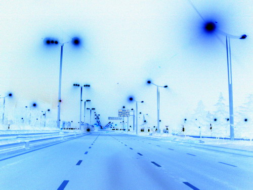
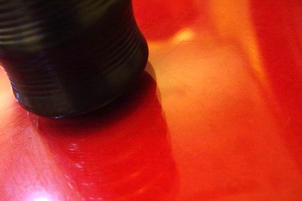
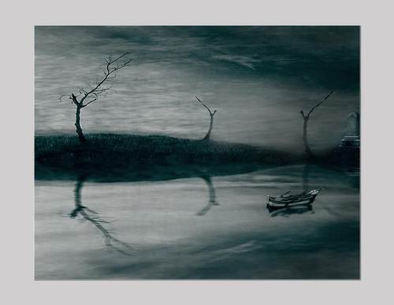
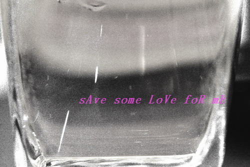
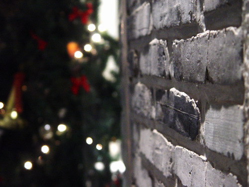
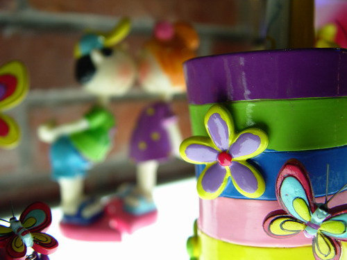
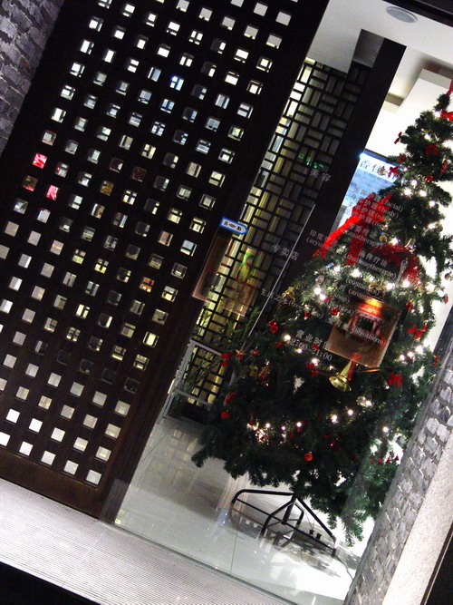

Archives : 2005-12
冬至降临 @ Dec 22, 2005
无论怎么忙碌，无论工作积下来多少，总会在早晨上班后逍遥一段时间，看看自己的别人的文字和图片。好几个早晨起来，听见自己说话的声音有些沙哑，担心就此形象变化，象每个抽烟女子的声带一样无可收拾了。
22号冬至，寒流比冬至早到一天，冬至意味着进九，是北半球白天最短的一天，冬至妈妈要给去世的亲人们烧纸，一定会嘱咐我冬至的晚上早点归家。明天最高温度在零度左右，气温下降7~8度。每当气温下降前办公室的电话会响起提醒防寒保暖的铃声，每当气温下降女孩子们就在想穿什么既保暖又漂亮呢？细数一番衣橱里的外套，基本没有可以抵御零下7~8度的，除非活得不耐烦了我想我会毫不犹豫买下金鹰那件2500多元的羽绒衣，然后因为这件衣服祈祷气温一直在零下7~8度......
下周公司举办年终晚宴，邀请了许多供货商。这样的活动每两年一次，想起前年晚宴的情形，仍然记忆犹新。要求男同事们一律穿西装打领带......女士着装要求呢？对方一本正经地说道：“膝盖以上的裙子，露脐装，网眼袜，看上去越冻越好。”估计这厮是疯了！
星期一综合症 @ Dec 20, 2005
周末两天在开心中结束，接着是星期一综合症。边工作边戴着耳机听RAP，除了接工作电话，基本上没张口讲话。一整天听EMINEM和50 CENT的歌，到了傍晚快听出汗珠来了......综合症下听他们的歌听到的是沉、旋转、安静、灰色场景、喜悦、一个人的世界。EMINEM的音乐总是潜伏着淡淡的忧郁，SAD的感觉喜欢到非常。有人说这是自虐，我说这是幸福！
Eminem:
1)When I’m gone
2)mockingbird
3)lose yourself
4)say my name
50 Cent:
1)hate it or love it
2)Disco Imferno
宜家，宜家 @ Dec 16, 2005
最近几天晚上老打游戏，坐在木头椅子上久了，硌的我背疼。于是想买把舒服一点的椅子，就去了趟宜家。一直以来，我对宜家这个地方的态度都比较矛盾，一方面宜家的东西明码标价并且实惠，为像我这样的懒汉提供了一种不用讨价还价的交易模式。另一方面，这种被规范化了的家具和生活，冻结了人们的想象力，让他们心甘情愿的一头栽进瑞典人铺好的温床里。
想想看，当你每天睁开眼睛，发现自己住在一本产品目录里，你从第48页的床上起来，叠好第63页的被子，在第47页的马桶上小便，用第81页的刀叉，然后在第106页的厨房吃早饭……你的生活完全可以用一串数字来表示：48631581106。这就是你的代码，等你死了，就可以把这串数字刻在你的墓碑上，数字越多越厉害。
这是多么的无趣阿！如果你愿意，你完全可以享有另外一种生活：你从自己发明的SM床上起来，把盖在身上的充气娃娃踹到一边去，在花盆里撒尿，用菜刀把你养的日本人剁了，然后绞成罐头当早餐。这种生活怎么样？起码比隔壁的48631581106有想象力吧。
但不可否认的是，宜家的存在的确代表了一种进步，它显示了物质文明是如何快捷方便的改善人们生活的。如果你不愿意自己安排生活，那么宜家就会为你操办一切。在《搏击俱乐部》里，那位衣冠楚楚的白领只要手里拿着画册，宜家就能像魔术一样给他变出任何他想要的东西。正所谓“宜家在手，天下我有”，你真是不服不行。
昨天晚上我在宜家里转悠，看见一对对情侣或夫妻，在宜家布置好的房间格局里闲谈。他们面带微笑，脸上洋溢着幸福的表情。那一刻，我似乎明白了宜家在中国火爆的原因。宜家，舒适的家，对每一个对生活充满期待的年轻人来说，这个黄色的LOGO无疑带给了他们所想拥有的那种温馨的家的感觉。
其实我也喜欢宜家，拉着心爱女孩的手一块逛宜家，我想那应该也算一种幸福吧。
（原文来自王老板）
寻找失去的现在 @ Dec 15, 2005
按照米兰.昆德拉的解释，安娜.卡列尼娜的自杀显然带有某种“即兴”的成分。似乎她的死是铁轨和车轮所酿造的。在这部作品的开始，安娜在车站上即产生了自杀的预感，预设中死亡的种子在她体内发芽并生长，注定要在日后的某一个瞬间兑现。福克纳笔下的昆丁的自杀与此大致相仿。他们在活着的时候实际上已经死去。
我们至少可以将自杀分成两种：浪漫的和现实的，浪漫的自杀渴望永恒和不朽，带有某种英雄主义的反叛情结而现实的自杀仅仅渴望消失。对这部分自杀者来说，生活的理由同时也构成了死亡的理由。
—格非
*********************************************************************

shot by Christina
sony F717
@Nanjing
中午休息时间走进车库坐进车厢，斜躺在座椅上听音乐，看着表情矜持严肃的人们驾着车进进出出，渐渐觉得滑稽与可笑，那些面孔下的灵魂......那时我是一个生活之外的观众。人生是为他们那种状态持续还是为自己这一刻进行？有人几乎不关心周遭事物，只活在自己的世界中。我听新闻关注他人心思变化，于是矛盾。昨天在公司附近第三次遇见那个表情愤怒的精神病人，每每都引起我的惶恐和心酸，事实上一个精神病人的世界比看似正常的人纯粹！
生活在这样一个有意思的时代，你表达的越清楚越明白，人们反而越是不明白，他们的困惑和误解使我加深了对自己的明白。这没什么，当年龄越来越长时，我不再期望获得大多数人的理解和认可。有时这种无望也包括对亲密的人。
我爱雀斑 @ Dec 14, 2005
朋友亲昵地叫我“雀斑女孩”，听到朋友传给我的Alan Tam这首可爱的《我爱雀斑》...心里特别温暖！

shot by Christina
sony F717
@1912,Nanjing
远远的想起你
心底内痴痴迷
只想可跟你天天相聚不分离
只想要跟你永不分开
wo-wo-wo-wo
rainy day 别要讲再会
心内情在永远徘徊
只愿永相爱陪伴你一起
暖暖的心底里
想起昔日心中情
那雀斑一双眼
想不想亦都艰难
想跟你能相爱永不分开
wo-wo-wo-wo
rainy day 别要讲再会
心内情是永远不改
心内永都相信能共你一起
游戏机牌 @ Dec 13, 2005
<strong>reticence</strong> @ Dec 06, 2005

忽然觉得头发是暧昧的，当你用手指轻柔地拨弄它。
寒冷的季节头发被理发师自信的剪去了很多，头发呈层次状，随意的如刚起床的摸样。当我的身体全神贯注为迎接下一次周期做准备时，理发师的自信将我变成另一个人，这样不仅要接受折磨还要适应新我。此时，头发开始柔软如丝，干燥发梢和染发沉默而麻木地消退，麻木压倒一切沉默。加缪的提醒：真正的无言不是沉默而是说话。
大量灰色人群如默声电影在汽车前挡玻璃上不断流动，车载CD里的背景音乐，简洁低沉的作品。城市里的人群，展示涨潮与落潮，存在着一种叫作命运的东西，那些错过的或特定的相遇，等待人流经过和穿越，永恒的只是时间！
越来越喜欢驾车穿梭在暖色的高架上，承载一切的愿望，沉静的蕴涵着内在节奏，既是夜的参与者又是旁观者，近懂得远，彼岸遥在远方，心灵随着高架提升或沉沦。
《风尚》杂志对虎子的访谈 @ Dec 03, 2005
0、你的梦想是什么，它是怎么来的，你觉得你现在完成了几分之几?
Hz:我的梦想其实很简单，就是希望我的音乐和我的生活能象爱人一样友爱相处，音乐可以眺望生活，生活可以感知音乐，她是目前最合适我的一种表达方式，我一直在实现她，完成了几分之几我还真的不知道！
1、现在国内的人还是更崇尚国外的电子音乐，这其实不利于本土电子音乐的发展。你不觉得在这个时代在中国选择做电子音乐是一件本身便有点疯狂的事情吗？
Hz：正是因为环境没有国外的那样好，可能才对自己是个更大的挑战，一个商人会什么东西好卖卖什么！对于一个前卫音乐家来讲可能是什么不好卖卖什么。音乐需要疯狂，疯狂是超越自己最重要的因素！
3、请用梦想和疯狂造一个句子
Hz：同志们当你梦想的时候，疯狂拜访过你吗？
5、作为国内一流电子音乐家，你走了很多国家很多城市，哪里的音乐和人群是最疯狂的？
Hz：我印象最深的还是在比利时演出的时候，他们完全被中国也有这样的电子音乐感到惊讶，还没有演完，我带去的所有CD就全卖光了，很美好的音乐国度！
6、接触过三宅一生 张肇达、刘洋、房莹等国内外一流的设计大师，你觉得是否必须为一件事狂热甚至疯狂，才能成功？
Hz：作为他们这些大师来讲，我觉的首先是人格的魅力，下来才是作品，梦想有时候和成功是死对头。疯狂是两者之间的使者。
7、本土电子音乐与国外电子音乐在制造疯狂的现场上，有什么不同吗
Hz：其实没有什么不同！可能是一个甩的是金头发，一个甩的是黑头发，哈开玩笑。
8、你觉得自己最不正常的地方是哪里
Hz：就是看上去很正常。
9、如果最亲密的人认为你不正常，你怎么办
Hz：那我想我会更不正常！
10、曾为之付出过的最不可思议的东西是什么，是否还有什么是你绝对不会牺牲的
Hz：我很早以前是部队的舞蹈演员，有一次我为了逃避跳舞，想在房间里练琴，就用开水把自己的脚烫伤，这样我就在床上练了一个星期的琴，这是发生在我十五岁的事，我想我的梦想遇到现实时是不会牺牲的吧，其实有很多人都是这样，这样很美好！
11、简单描述下你现在的生活状态
Hz：最近的演出很多，赶上新唱片上市非常累，没有时间做音乐，这很不正常，我现在想做点新东西了。
12、如何形容你与音乐之间的关系
Hz：我想是我们彼此之间都能感受到对方的存在这点就够了。
13、成为一个有名的电子音乐家花了你多长时间，是什么让你坚持下去
Hz：就是我很自信，我也觉的自己也还够努力，是对自己很有信心所以一直在做音乐，坚持这个词对我来讲有点太沉重了。
14、假如你真的疯了，你觉得自己疯的样子是什么样
Hz：我想疯了一定能长寿吧，应该很好玩，每天很飞，我想我疯了也是个友好的疯子，见了人就傻乐。
15、梦想对你来说意味着什么，为什么
a)糖果 b)毒药 c)泡沫 d)毒品
Hz：我选糖果和毒品，象糖果以样甜美，象毒品一样超现实，和分裂。
16、你理想中的生活或者世界是什么样子
Hz：我理想的生活希望每天遇见的都是好人，我希望和我喜欢的人每天都生活在美丽的小岛上。
17、梦想对你来说意味着什么，为什么
Hz：意味着不现实和疑惑还有动力！我还想梦想妻妾成群，儿孙满堂呢！好多男人是这样想的吧！
18、是否认同“为了梦想疯狂是天堂”命题，为什么
Hz：非常喜欢这个命题，要我的话就是{为了梦，想疯狂着去天堂}
你觉得做电子音乐最好玩的地方在哪？在于这样的音乐有很多偶然的东西，和未知的快感，最好的是你一个人就可以完成所有的东西。很DIY的音乐。
19、你是怎么做到玩着玩着就成为数一数二的电子音乐家了
Hz：我比较聪明吧，还有就是做的时间比较长了，发了四张唱片了，排队吃果果也排到我了吧，我想。
20、假如魔鬼说：你要在“快乐地梦想但不一定梦想成真”和“剥夺了梦想的幸福但它最终可以成真”之间做选择，你会怎么做，为什么？
Hz：我不想选择，这两种都挺痛苦的，而且我觉得没有那么绝对。
21、你觉得自己是做有理想的疯子比较快乐，还是做平凡人好？为什么
Hz：我都想做，如果可以的话，听起来两个都是我想过的生活。
22、下辈子还会继续做电子音乐吗？
Hz：那要看到了我儿子那一代还有没有这个电子音乐了，也许就变成生物音乐什么的了，真好你可以梦想未来，你可以为未知的世界疯狂，我想说那真是美好的未来呀！
虎子第四张专辑《两个人的旅行》。

LA(O)ST @ Dec 02, 2005

@save some love for me @ Dec 02, 2005
被朋友描述“独立坚强...比较硬”，一旦形象如此必然没得便宜占，博取同情未必不好，如今弱者被授予的更多，不过不是自己争取来的会有多珍惜呢？我问他是否如朋友所说的独立和坚强？他持相反意见，认为：脆弱，感性，晚熟，心智也比实际年龄要幼稚。
晚饭后拍了些片子，骤冷的天气，避闪不及，穿着裙子在寒冷中瑟瑟发抖，体会着早期的圣诞气氛。






shot by Christina
Sony F717
@1912 Nanjing
LoVe cAn sInG @ Dec 01, 2005
11月28日，晨，载入历史的一刻。
无法躲避的在大厅门口和女友撞个正面，我的眼睛一直没离开她的面孔，直直的盯着...她和身边的女孩边走边说话，发现我之后狠狠瞪了我一眼，我开始情不自禁畅快淋漓地笑着从她身边擦身而过。前一天路上看到一辆不常见的车尾，琢磨什么车来着，往上看到两个米老鼠的靠垫靠在窗户上，心里一惊...是她？！两天看到她两次，天意吗？
在我们情绪低落而敏感阶段，莫名其妙闹矛盾彼此不联系一年两个月，曾远远的看到几回，必然会择路而逃。期间经常向共同的朋友打听她的消息，状态好不好，生活得如何，有没有问到我...得知她有段低迷而颓废的时期，很想打电话问候，想陪伴在她身边，象过去她陪伴在精神崩溃边缘的我一样陪伴着她。但终究没这么做，于是打电话给同城市的其他朋友请求去陪伴其左右，同时拥有所有女人的劣根性...抱怨着矛盾着。春节，想发个“礼貌性”的祝福短信，所谓“礼貌”不过是为了保全那么点可笑的自尊。为什么每次不开心都是我找她呢？果真她比我更自尊？果真我就TMD的那么软弱？有的爱情可以将体内洗劫一空，只剩下呼吸，我，从不为爱情回头。友谊，这种情感的伟大之处在于可以使我从原路返回去寻找丢失的她！
回到办公室我再也按捺不住，向上海的女友汇报了这次神奇的偶遇，在她的鼓励下抓起电话打过去。
“喂？”她的声音在电话那边出现。
“瞪什么眼啊？”
“讨厌，你终于打电话给我了...”接着是一串熟悉的笑声......
她问我：“几天前收到一块巧克力吗？”
“收到的，你怎么知道呀？”
“是我叫她转交给你的，还让她别告诉你是我给你的。”她说道。
“做好事不留名啊...”
味觉马上开始回忆那块黑巧克力甜蜜与苦涩。
“病好了，不是疯子啦？”
我无奈地笑着：“正常人一般都我这样，你自己看呢？”
她在电话那边发嗲：“我恨死你了，一直都想你，可继续往下想就恨。”
爱与恨是亲姐妹，从不分离。爱有多深恨就有多深，不爱了就是恨登场，要不怎么说爱恨交加呢？说明她爱我爱的深呀，我琢磨着。今天早晨不知道哪个畜生6：11分就爬到我的BLOG上骂人，估计也是爱之深恨之切吧！当别人恨你时，你就想着对方是多么的爱你，这样世界会明亮许多。